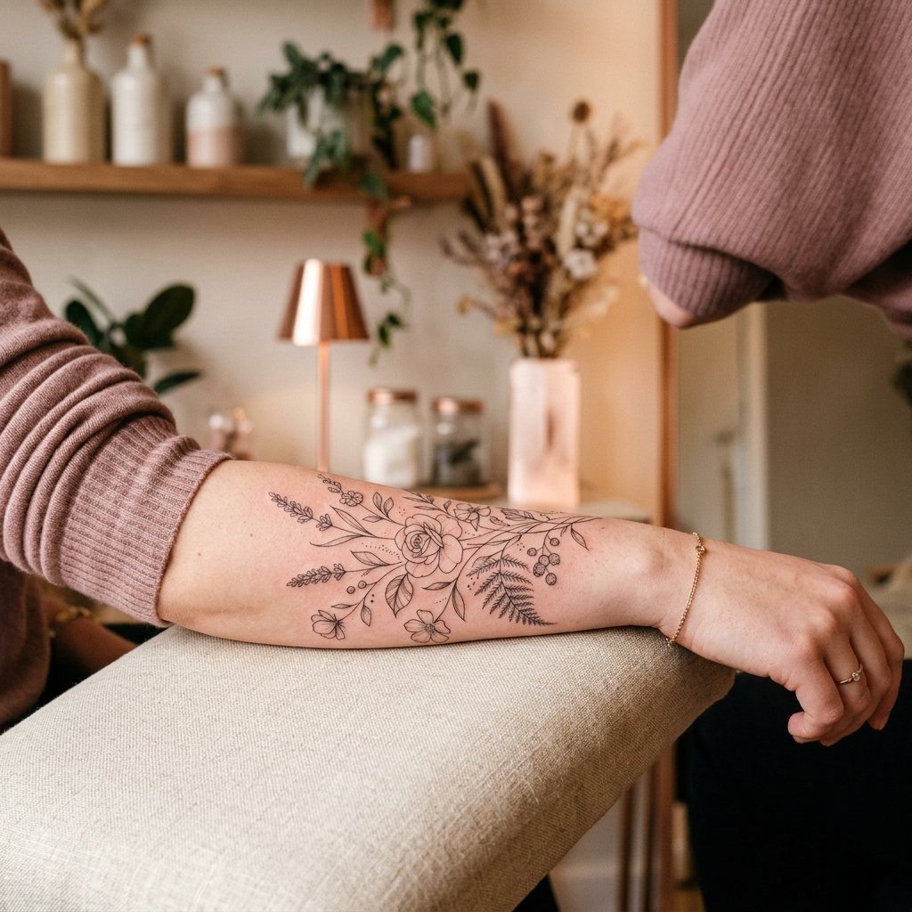
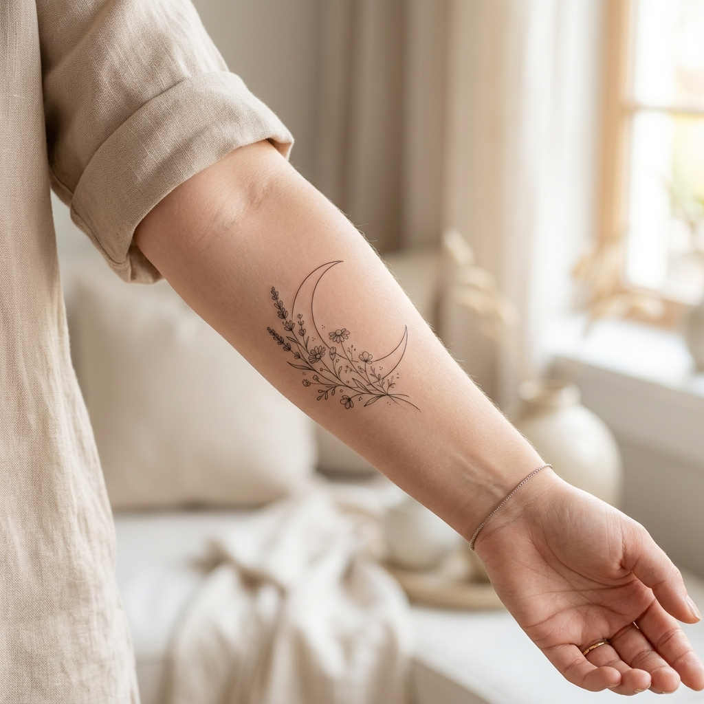
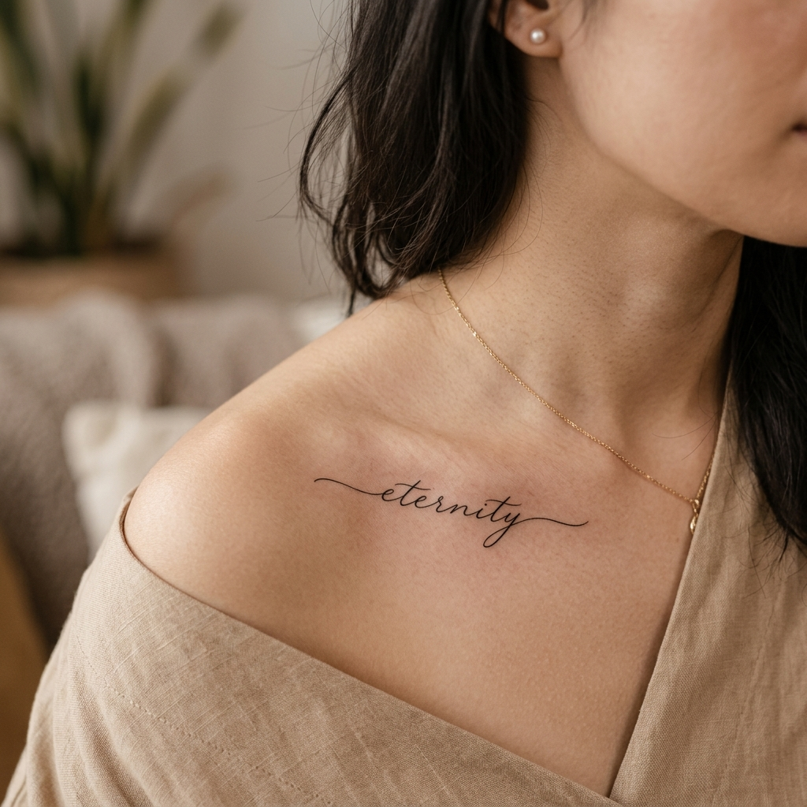
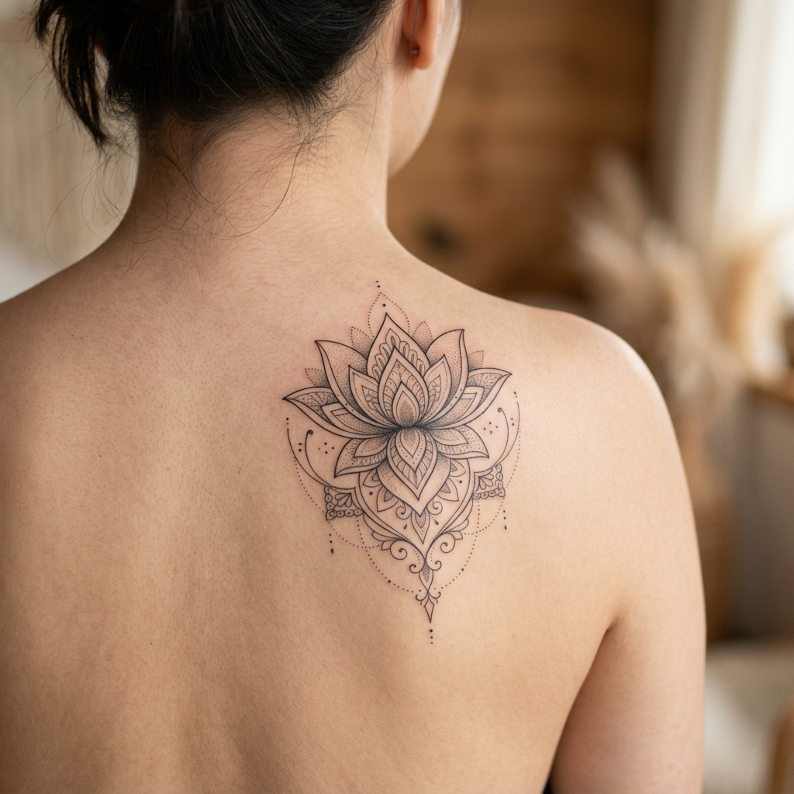

×

Categoria
Título da Arte
Tatuagem executada em traço fino (fine line) com agulhas de alta precisão. Arte exclusiva feita sob medida.
Quero Uma Tattoo AssimTatuagens exclusivas, minimalistas e emotivas em Montes Claros e Januária-MG. Transformando afetos, histórias e memórias em traços precisos e inesquecíveis.
Seguidores no Insta
Tattoos Realizadas
Biossegurança
Cada traço é executado com paciência, carinho e precisão cirúrgica para que sua arte permaneça nítida e perfeita por toda a vida.
Utilização de agulhas especiais de microtatuagem que proporcionam linhas sutis, leves e sem estouro de traço.
Criação personalizada a partir da sua ideia ou história. Sua tatuagem é feita sob medida para a sua anatomia.
Ambiente rigorosamente esterilizado, insumos de alta qualidade e materiais 100% descartáveis e homologados.
Atendimento humanizado, ambiente calmo e técnicas de aplicação que reduzem significativamente o desconforto.
"Tatuagem não é apenas estética; é eternizar momentos e sentimentos na pele com sutileza."
Apaixonada pela arte dos traços delicados, construí minha jornada buscando criar experiências únicas para cada cliente. Meu foco é traduzir emoções e ideias em tatuagens elegantes que valorizam o corpo e a individualidade.
Confira alguns dos trabalhos recentes em traço fino desenvolvidos no estúdio.




Selecione o estilo, tamanho e local desejado para obter uma faixa de valor estimada e enviar direto para o WhatsApp da Iara!
*O valor final é confirmado após avaliação detalhada da ideia.
Agende sua sessão na cidade de sua preferência com todo o conforto e segurança.
Ambiente climatizado, moderno e bem localizado no centro da cidade, preparado para oferecer o máximo conforto durante sua tattoo.
Agendar em Montes ClarosAtendimento quinzenal com agenda dedicada para os clientes de Januária e região. Reservas antecipadas.
Agendar em JanuáriaDicas essenciais para preparar a sua pele e garantir que seus traços finos fiquem perfeitos.
Beba bastante água e hidrate a região da tattoo nos 3 dias anteriores à sessão.
Durma bem na noite anterior e faça uma refeição reforçada antes de vir ao estúdio.
Não consuma bebidas alcoólicas nas 24h que antecedem o procedimento.
Lave com sabonete neutro 2 a 3 vezes ao dia e seque com papel toalha sem esfregar.
Aplique uma camada bem fina de pomada recomendada 3 vezes ao dia.
Não tome sol direto, nem frequente praia, piscina ou sauna por 15 a 20 dias.
A satisfação e o carinho de quem eternizou suas ideias com a Iara Pimenta.
"A Iara tem uma mão super leve! Fiz minha primeira tattoo com ela e quase não senti dor. O traço ficou extremamente fino e delicado. Recomendo de olhos fechados!"
"Atendimento impecável do início ao fim! Ela ouviu minha ideia, fez o desenho exatamente como eu sonhava e o estúdio é hiper limpo e acolhedor."
"O que mais me impressionou foi a cicatrização. Os traços finos continuam perfeitinhos mesmo após meses. Já estou planejando a próxima!"
Tudo o que você precisa saber antes de fazer sua tatuagem.
Por utilizarmos agulhas extremamente finas e técnicas suaves de pigmentação, o desconforto é significativamente menor do que em tatuagens tradicionais. A maioria dos clientes relata uma sensação muito tranquila!
Após conversarmos pelo WhatsApp sobre sua ideia e referências, eu crio uma arte exclusiva sob medida para você. No dia da sessão ajustamos o decalque perfeitamente à sua anatomia.
Basta clicar em qualquer botão de orçamento no site para ser direcionado ao WhatsApp. Lá agendamos o melhor dia e horário na cidade desejada (Montes Claros ou Januária).
Para confirmar o agendamento da sessão e início do projeto da arte, é solicitado um sinal simbólico que é abatido do valor final da tatuagem.
Ambiente moderno, climatizado e acolhedor em Montes Claros e Januária-MG. Projetos autorais em traço fino com atendimento individualizado.
Tatuagem executada em traço fino (fine line) com agulhas de alta precisão. Arte exclusiva feita sob medida.
Quero Uma Tattoo Assim